import pandas as pd
import matplotlib.pyplot as plt
import numpy as np
import seaborn as sns
from matplotlib.colors import LogNorm
from katlas.core import *
from katlas.plot import *
from tqdm import tqdm
from pathlib import Path
sns.set(rc={"figure.dpi":300, 'savefig.dpi':300})
sns.set_context('notebook')
sns.set_style("ticks")Motif extraction
df=pd.read_parquet('raw/combine_source_grouped.parquet')cluster_map=pd.read_parquet('raw/kmeans_site_long_new_cluster.parquet')cluster_map = cluster_map[['sub_site','cluster_new']].drop_duplicates()cluster_map = cluster_map[cluster_map.sub_site.isin(df.sub_site.unique())].reset_index(drop=True)df = df.merge(cluster_map,on='sub_site',how='outer')df.to_parquet('raw/combine_source_grouped_cluster.parquet',index=False)Note that the df above is in long form, with duplicates in sub_site due to cluster overlap
df| kin_sub_site | kinase_uniprot | substrate_uniprot | site | source | substrate_genes | substrate_sequence | substrate_phosphoseq | position | site_seq | sub_site | cluster_new | |
|---|---|---|---|---|---|---|---|---|---|---|---|---|
| 0 | P48730_A0A2R8Y4L2_S158 | P48730 | A0A2R8Y4L2 | S158 | Sugiyama | HNRNPA1L3 HNRNPA1P48 | MSKSESPKEPEQLRKLFIGGLSFETTDESLRSHFEQWGTLTDCVVM... | MSKSEsPKEPEQLRKLFIGGLsFEtTDESLRSHFEQWGTLTDCVVM... | 158 | TDRGSGKKRGFAFVTFDDHDsVDKIVIQKYHTVNGHNCEVR | A0A2R8Y4L2_S158 | 391 |
| 1 | P48730_A0A2R8Y4L2_S158 | P48730 | A0A2R8Y4L2 | S158 | Sugiyama | HNRNPA1L3 HNRNPA1P48 | MSKSESPKEPEQLRKLFIGGLSFETTDESLRSHFEQWGTLTDCVVM... | MSKSEsPKEPEQLRKLFIGGLsFEtTDESLRSHFEQWGTLTDCVVM... | 158 | TDRGSGKKRGFAFVTFDDHDsVDKIVIQKYHTVNGHNCEVR | A0A2R8Y4L2_S158 | 634 |
| 2 | P48730_A0A2R8Y4L2_S158 | P48730 | A0A2R8Y4L2 | S158 | Sugiyama | HNRNPA1L3 HNRNPA1P48 | MSKSESPKEPEQLRKLFIGGLSFETTDESLRSHFEQWGTLTDCVVM... | MSKSEsPKEPEQLRKLFIGGLsFEtTDESLRSHFEQWGTLTDCVVM... | 158 | TDRGSGKKRGFAFVTFDDHDsVDKIVIQKYHTVNGHNCEVR | A0A2R8Y4L2_S158 | 392 |
| 3 | P48730_A0A2R8Y4L2_S158 | P48730 | A0A2R8Y4L2 | S158 | Sugiyama | HNRNPA1L3 HNRNPA1P48 | MSKSESPKEPEQLRKLFIGGLSFETTDESLRSHFEQWGTLTDCVVM... | MSKSEsPKEPEQLRKLFIGGLsFEtTDESLRSHFEQWGTLTDCVVM... | 158 | TDRGSGKKRGFAFVTFDDHDsVDKIVIQKYHTVNGHNCEVR | A0A2R8Y4L2_S158 | 542 |
| 4 | P48730_A0A2R8Y4L2_S158 | P48730 | A0A2R8Y4L2 | S158 | Sugiyama | HNRNPA1L3 HNRNPA1P48 | MSKSESPKEPEQLRKLFIGGLSFETTDESLRSHFEQWGTLTDCVVM... | MSKSEsPKEPEQLRKLFIGGLsFEtTDESLRSHFEQWGTLTDCVVM... | 158 | TDRGSGKKRGFAFVTFDDHDsVDKIVIQKYHTVNGHNCEVR | A0A2R8Y4L2_S158 | 388 |
| ... | ... | ... | ... | ... | ... | ... | ... | ... | ... | ... | ... | ... |
| 813555 | P52333_Q9Y6Y8_Y935 | P52333 | Q9Y6Y8 | Y935 | Sugiyama | SEC23IP MSTP053 | MAERKPNGGSGGASTSSSGTNLLFSSSATEFSFNVPFIPVTQASAS... | MAERKPNGGSGGASTSSSGTNLLFSSSATEFSFNVPFIPVTQASAS... | 935 | KQVVEAEKVVEsPDFsKDEDyLGKVGMLNGGRRIDYVLQEK | Q9Y6Y8_Y935 | 672 |
| 813556 | P07948_Q9Y6Y9_Y131 | P07948 | Q9Y6Y9 | Y131 | EPSD|PSP | LY96 ESOP1 MD2 | MLPFLFFSTLFSSIFTEAQKQYWVCNSSDASISYTYCDKMQYPISI... | MLPFLFFSTLFSSIFTEAQKQyWVCNSSDASISYTYCDKMQYPISI... | 131 | ETVNTTISFSFKGIKFSKGKyKCVVEAISGSPEEMLFCLEF | Q9Y6Y9_Y131 | 676 |
| 813557 | P07948_Q9Y6Y9_Y131 | P07948 | Q9Y6Y9 | Y131 | EPSD|PSP | LY96 ESOP1 MD2 | MLPFLFFSTLFSSIFTEAQKQYWVCNSSDASISYTYCDKMQYPISI... | MLPFLFFSTLFSSIFTEAQKQyWVCNSSDASISYTYCDKMQYPISI... | 131 | ETVNTTISFSFKGIKFSKGKyKCVVEAISGSPEEMLFCLEF | Q9Y6Y9_Y131 | 672 |
| 813558 | P07948_Q9Y6Y9_Y22 | P07948 | Q9Y6Y9 | Y22 | EPSD|PSP | LY96 ESOP1 MD2 | MLPFLFFSTLFSSIFTEAQKQYWVCNSSDASISYTYCDKMQYPISI... | MLPFLFFSTLFSSIFTEAQKQyWVCNSSDASISYTYCDKMQYPISI... | 22 | LPFLFFSTLFSSIFTEAQKQyWVCNSSDASISYTYCDKMQY | Q9Y6Y9_Y22 | 676 |
| 813559 | P07948_Q9Y6Y9_Y22 | P07948 | Q9Y6Y9 | Y22 | EPSD|PSP | LY96 ESOP1 MD2 | MLPFLFFSTLFSSIFTEAQKQYWVCNSSDASISYTYCDKMQYPISI... | MLPFLFFSTLFSSIFTEAQKQyWVCNSSDASISYTYCDKMQYPISI... | 22 | LPFLFFSTLFSSIFTEAQKQyWVCNSSDASISYTYCDKMQY | Q9Y6Y9_Y22 | 672 |
813560 rows × 12 columns
Motifs
df.drop_duplicates('sub_site')--------------------------------------------------------------------------- TypeError Traceback (most recent call last) Cell In[47], line 1 ----> 1 df['kinase_uniprot'].drop_duplicates(subset='sub_site') TypeError: drop_duplicates() got an unexpected keyword argument 'subset'
def extract_motifs2(df, cluster_col, subcluster_col=None, seq_col='site_seq',count_thr=10, valid_thr=None,plot=False):
"Extract motifs from clusters in a dataframe"
pssms = []
ids = []
value_counts = df[cluster_col].value_counts()
for cluster_id, counts in tqdm(value_counts.items(),total=len(value_counts)):
if count_thr is not None and counts <= count_thr:
continue
# Modify this line
# df_cluster = df[df[cluster_col] == cluster_id]
df_cluster = df[df[cluster_col] == cluster_id].drop_duplicates('sub_site')
n= len(df_cluster)
pssm = get_prob(df_cluster, seq_col)
valid_score = (pssm != 0).sum().sum() / (pssm.shape[0] * pssm.shape[1])
if valid_thr is not None and valid_score <= valid_thr:
continue
pssms.append(flatten_pssm(pssm))
ids.append(cluster_id)
if plot:
plot_logo(pssm, title=f'{cluster_id} (n={n})', figsize=(14, 1))
plt.show()
plt.close()
if subcluster_col is not None:
subcluster_counts = df_cluster[subcluster_col].value_counts()
print(subcluster_counts)
for idx, counts in subcluster_counts.items():
i=0
if count_thr is not None and counts <= count_thr:
continue
df_subcluster= df_cluster[df_cluster[subcluster_col] == idx].drop_duplicates('sub_site')
pssm_sub = get_prob(df_subcluster, seq_col)
valid_score_sub = (pssm_sub != 0).sum().sum() / (pssm_sub.shape[0] * pssm_sub.shape[1])
if valid_thr is not None and valid_score_sub <= valid_thr:
continue
n_sub = len(df_subcluster)
plot_logo(pssm_sub, title=f'Cluster {idx} (n={n_sub})', figsize=(14, 1))
plt.show()
plt.close()
i += 1
if i== 3:
break
pssm_df = pd.DataFrame(pssms, index=ids)
return pssm_df_ = extract_motifs2(df,'kinase_uniprot',subcluster_col='cluster_new',count_thr=10,valid_thr=0.5,plot=True)_ = extract_motifs2(df,'cluster_new','site_seq',count_thr=10,valid_thr=0.3,plot=True) 0%| | 0/747 [00:00<?, ?it/s]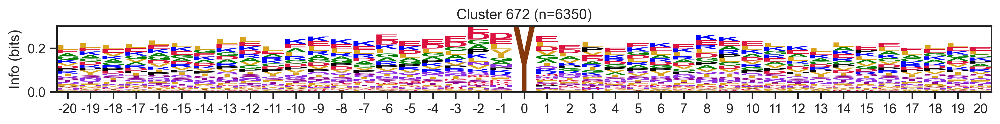
0%| | 1/747 [00:09<1:57:48, 9.48s/it]--------------------------------------------------------------------------- KeyboardInterrupt Traceback (most recent call last) Cell In[27], line 1 ----> 1 _ = extract_motifs2(df,'cluster_new','site_seq',count_thr=10,valid_thr=0.3,plot=True) Cell In[26], line 24, in extract_motifs2(df, cluster_col, seq_col, count_thr, valid_thr, plot) 21 ids.append(cluster_id) 23 if plot: ---> 24 plot_logo(pssm, title=f'Cluster {cluster_id} (n={n})', figsize=(14, 1)) 25 plt.show() 26 plt.close() File f:\git\katlas\katlas\plot.py:132, in plot_logo(prob_df, title, scale_zero, ax, figsize) 130 if ax is None: 131 fig, ax = plt.subplots(figsize=figsize) --> 132 logo = logomaker.Logo(logo_df.T, color_scheme='kinase_protein', flip_below=False, ax=ax) 133 logo.ax.set_ylabel("Info (bits)") 134 logo.style_xticks(fmt='%d') File f:\git\katlas\.venv\lib\site-packages\logomaker\src\error_handling.py:106, in handle_errors.<locals>.wrapped_func(*args, **kwargs) 102 mistake = None 104 try: 105 # Execute function --> 106 result = func(*args, **kwargs) 108 # If running functional test and expect to fail 109 if should_fail is True: File f:\git\katlas\.venv\lib\site-packages\logomaker\src\Logo.py:186, in Logo.__init__(self, df, color_scheme, font_name, stack_order, center_values, baseline_width, flip_below, shade_below, fade_below, fade_probabilities, vpad, vsep, alpha, show_spines, ax, zorder, figsize, **kwargs) 183 self.fig = ax.figure 185 # compute characters --> 186 self._compute_glyphs() 188 # style glyphs below x-axis 189 self.style_glyphs_below(shade=self.shade_below, 190 fade=self.fade_below, 191 flip=self.flip_below) File f:\git\katlas\.venv\lib\site-packages\logomaker\src\Logo.py:1058, in Logo._compute_glyphs(self) 1055 flip = (v < 0 and self.flip_below) 1057 # Create glyph if height is finite -> 1058 glyph = Glyph(p, c, 1059 ax=self.ax, 1060 floor=floor, 1061 ceiling=ceiling, 1062 color=this_color, 1063 flip=flip, 1064 zorder=self.zorder, 1065 font_name=self.font_name, 1066 alpha=self.alpha, 1067 vpad=self.vpad, 1068 **self.glyph_kwargs) 1070 # Add glyph to glyph_df 1071 glyph_df.loc[p, c] = glyph File f:\git\katlas\.venv\lib\site-packages\logomaker\src\error_handling.py:106, in handle_errors.<locals>.wrapped_func(*args, **kwargs) 102 mistake = None 104 try: 105 # Execute function --> 106 result = func(*args, **kwargs) 108 # If running functional test and expect to fail 109 if should_fail is True: File f:\git\katlas\.venv\lib\site-packages\logomaker\src\Glyph.py:180, in Glyph.__init__(self, p, c, floor, ceiling, ax, width, vpad, font_name, font_weight, color, edgecolor, edgewidth, dont_stretch_more_than, flip, mirror, zorder, alpha, figsize) 177 self.ax = ax 179 # Make patch --> 180 self._make_patch() File f:\git\katlas\.venv\lib\site-packages\logomaker\src\Glyph.py:320, in Glyph._make_patch(self) 312 self.patch = PathPatch(char_path, 313 facecolor=self.color, 314 zorder=self.zorder, 315 alpha=self.alpha, 316 edgecolor=self.edgecolor, 317 linewidth=self.edgewidth) 319 # add patch to axes --> 320 self.ax.add_patch(self.patch) File f:\git\katlas\.venv\lib\site-packages\matplotlib\axes\_base.py:2414, in _AxesBase.add_patch(self, p) 2412 if p.get_clip_path() is None: 2413 p.set_clip_path(self.patch) -> 2414 self._update_patch_limits(p) 2415 self._children.append(p) 2416 p._remove_method = self._children.remove File f:\git\katlas\.venv\lib\site-packages\matplotlib\axes\_base.py:2436, in _AxesBase._update_patch_limits(self, patch) 2433 # Get all vertices on the path 2434 # Loop through each segment to get extrema for Bezier curve sections 2435 vertices = [] -> 2436 for curve, code in p.iter_bezier(simplify=False): 2437 # Get distance along the curve of any extrema 2438 _, dzeros = curve.axis_aligned_extrema() 2439 # Calculate vertices of start, end and any extrema in between File f:\git\katlas\.venv\lib\site-packages\matplotlib\path.py:447, in Path.iter_bezier(self, **kwargs) 445 yield BezierSegment(np.array([prev_vert, verts])), code 446 elif code == Path.CURVE3: --> 447 yield BezierSegment(np.array([prev_vert, verts[:2], 448 verts[2:]])), code 449 elif code == Path.CURVE4: 450 yield BezierSegment(np.array([prev_vert, verts[:2], 451 verts[2:4], verts[4:]])), code File f:\git\katlas\.venv\lib\site-packages\matplotlib\bezier.py:202, in BezierSegment.__init__(self, control_points) 200 self._cpoints = np.asarray(control_points) 201 self._N, self._d = self._cpoints.shape --> 202 self._orders = np.arange(self._N) 203 coeff = [math.factorial(self._N - 1) 204 // (math.factorial(i) * math.factorial(self._N - 1 - i)) 205 for i in range(self._N)] 206 self._px = (self._cpoints.T * coeff).T KeyboardInterrupt:
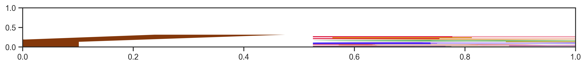
Extract sequence
df['position']=df['site'].str[1:].astype(int)df['site_seq'] = extract_site_seq(df,
seq_col='substrate_phosphoseq',
position_col='position',
length=20)100%|██████████| 187066/187066 [00:06<00:00, 29995.39it/s]df_k = df[df.kinase_uniprot=='P49841']len(df_k)691pssm = get_prob(df_k,'site_seq')pssm.head()| Position | -20 | -19 | -18 | -17 | -16 | -15 | -14 | -13 | -12 | -11 | -10 | -9 | -8 | -7 | -6 | -5 | -4 | -3 | -2 | -1 | 0 | 1 | 2 | 3 | 4 | 5 | 6 | 7 | 8 | 9 | 10 | 11 | 12 | 13 | 14 | 15 | 16 | 17 | 18 | 19 | 20 |
|---|---|---|---|---|---|---|---|---|---|---|---|---|---|---|---|---|---|---|---|---|---|---|---|---|---|---|---|---|---|---|---|---|---|---|---|---|---|---|---|---|---|
| aa | |||||||||||||||||||||||||||||||||||||||||
| P | 0.069940 | 0.077381 | 0.062407 | 0.084695 | 0.082840 | 0.072378 | 0.087149 | 0.081121 | 0.077827 | 0.071848 | 0.101025 | 0.074671 | 0.084672 | 0.106414 | 0.112082 | 0.094340 | 0.079826 | 0.133333 | 0.150507 | 0.131693 | 0.0 | 0.420290 | 0.141194 | 0.094891 | 0.049708 | 0.187408 | 0.082111 | 0.077266 | 0.064662 | 0.106928 | 0.074242 | 0.077863 | 0.078462 | 0.070878 | 0.095164 | 0.092476 | 0.074132 | 0.090190 | 0.071542 | 0.099359 | 0.078905 |
| G | 0.087798 | 0.087798 | 0.069837 | 0.065379 | 0.076923 | 0.054653 | 0.088626 | 0.095870 | 0.064611 | 0.068915 | 0.070278 | 0.087848 | 0.058394 | 0.065598 | 0.066958 | 0.063861 | 0.068215 | 0.101449 | 0.076700 | 0.105644 | 0.0 | 0.075362 | 0.065502 | 0.086131 | 0.046784 | 0.054173 | 0.060117 | 0.083210 | 0.084211 | 0.058735 | 0.063636 | 0.083969 | 0.084615 | 0.075501 | 0.076443 | 0.081505 | 0.067823 | 0.060127 | 0.077901 | 0.088141 | 0.066023 |
| A | 0.101190 | 0.095238 | 0.071322 | 0.075780 | 0.073964 | 0.103397 | 0.073855 | 0.063422 | 0.076358 | 0.085044 | 0.073206 | 0.068814 | 0.084672 | 0.080175 | 0.064047 | 0.065312 | 0.047896 | 0.069565 | 0.085384 | 0.073806 | 0.0 | 0.039130 | 0.101892 | 0.061314 | 0.062865 | 0.074671 | 0.099707 | 0.078752 | 0.066165 | 0.060241 | 0.083333 | 0.044275 | 0.067692 | 0.078582 | 0.068643 | 0.068966 | 0.085174 | 0.090190 | 0.073132 | 0.054487 | 0.077295 |
| C | 0.022321 | 0.007440 | 0.011887 | 0.014859 | 0.010355 | 0.008863 | 0.007386 | 0.014749 | 0.019090 | 0.008798 | 0.010249 | 0.011713 | 0.018978 | 0.014577 | 0.020378 | 0.011611 | 0.007257 | 0.005797 | 0.024602 | 0.014472 | 0.0 | 0.007246 | 0.030568 | 0.027737 | 0.004386 | 0.005857 | 0.024927 | 0.011887 | 0.012030 | 0.015060 | 0.010606 | 0.015267 | 0.023077 | 0.013867 | 0.018721 | 0.014107 | 0.009464 | 0.011076 | 0.033386 | 0.004808 | 0.008052 |
| S | 0.090774 | 0.071429 | 0.086181 | 0.054978 | 0.079882 | 0.064993 | 0.085672 | 0.063422 | 0.082232 | 0.071848 | 0.077599 | 0.073206 | 0.083212 | 0.069971 | 0.071325 | 0.091437 | 0.074020 | 0.039130 | 0.062229 | 0.078148 | 0.0 | 0.027536 | 0.062591 | 0.103650 | 0.090643 | 0.057101 | 0.087977 | 0.098068 | 0.093233 | 0.057229 | 0.095455 | 0.083969 | 0.078462 | 0.070878 | 0.070203 | 0.070533 | 0.078864 | 0.060127 | 0.085851 | 0.086538 | 0.095008 |
plot_logo(pssm,'kinase',figsize=(12,1))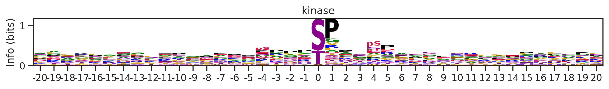
plot_logo_heatmap(pssm,'kinase',figsize=(14,8))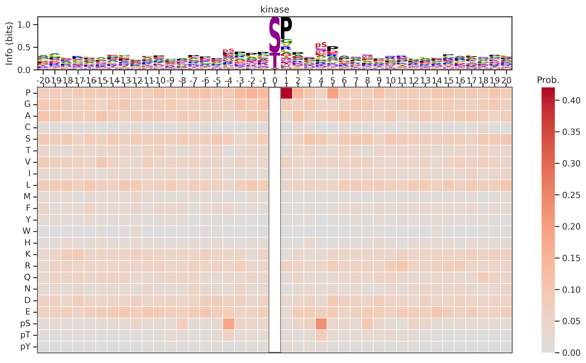
Kmeans
from sklearn.cluster import KMeansonehot = onehot_encode(df['site_seq'])df_k=df[df.kinase_uniprot=='P00519'].copy()
onehot_k = onehot[df.kinase_uniprot=='P00519'].copy()def determine_clusters_elbow(encoded_data, max_clusters=40):
wcss = []
for i in range(1, max_clusters + 1):
kmeans = KMeans(n_clusters=i, random_state=42)
kmeans.fit(encoded_data)
wcss.append(kmeans.inertia_)
# Plot the Elbow graph
plt.figure(figsize=(5, 3))
plt.plot(range(1, max_clusters + 1), wcss)
plt.title(f'Elbow Method (n={len(encoded_data)})')
plt.xlabel('# Clusters')
plt.ylabel('WCSS')determine_clusters_elbow(onehot_k)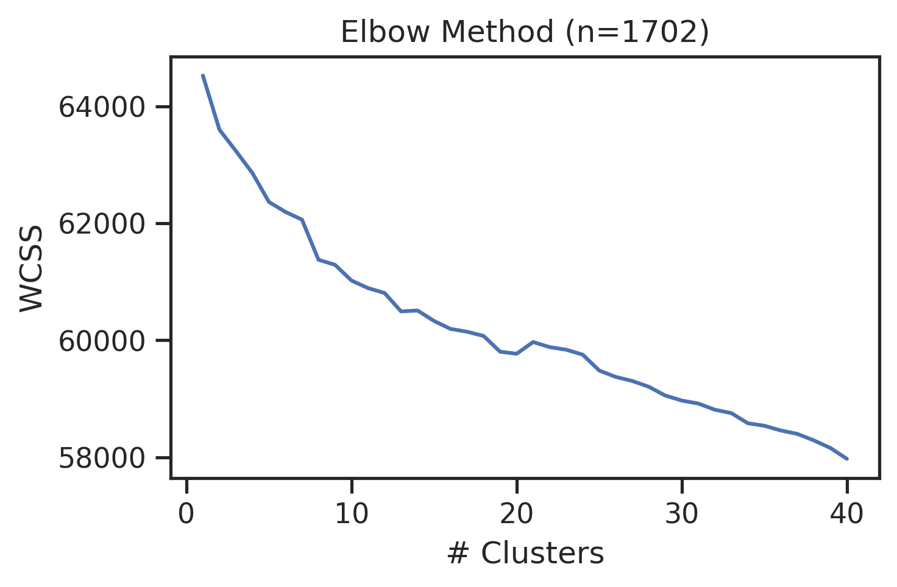
Overall cluster
len(df.kinase_uniprot.unique())455kmeans = KMeans(n_clusters=200, random_state=42)
cluster_labels = kmeans.fit_predict(onehot)
df['kmeans_overall'] = cluster_labelsdf_k=df[df.kinase_uniprot=='P31749'].copy()
onehot_k = onehot[df.kinase_uniprot=='P31749'].copy()df_k.kmeans_overall.value_counts()kmeans_overall
8 252
171 126
7 48
59 27
87 18
...
142 1
61 1
28 1
176 1
89 1
Name: count, Length: 68, dtype: int64for cluster_id,counts in df_k.kmeans_overall.value_counts().items():
if counts>15:
df_k_cluster = df_k[df_k.kmeans_overall==cluster_id]
pssm = get_prob(df_k_cluster,'site_seq')
if (pssm==0).sum().sum()/(pssm.shape[0]*pssm.shape[1])<0.5: # filter out low quality pssm
# plot_logo_heatmap(pssm,title='kinase',figsize=(14,8))
plot_logo(pssm,title=f'kinase (n={counts})',figsize=(14,1))
plt.show()
plt.close()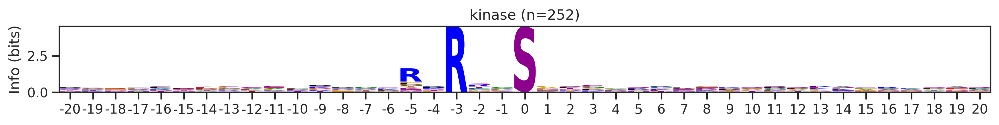
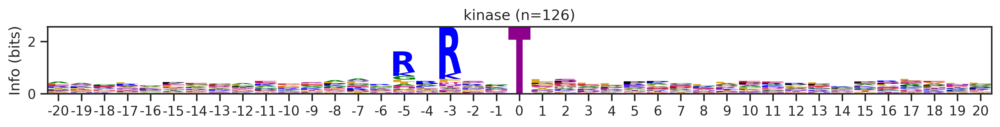
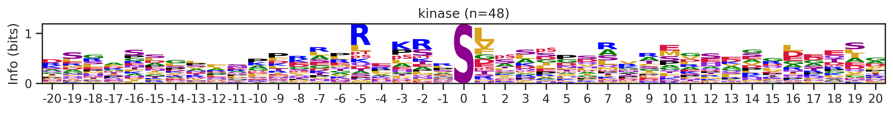
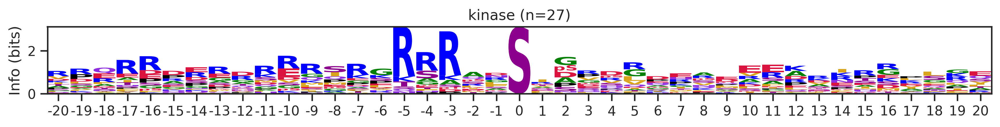
kmeans = KMeans(n_clusters=10, random_state=42)
cluster_labels = kmeans.fit_predict(onehot_k)
df_k['cluster'] = cluster_labelscluster_counts = df_k.cluster.value_counts()
cluster_countscluster
9 523
5 414
1 399
4 113
8 76
7 76
6 44
2 25
0 16
3 16
Name: count, dtype: int64pssm = get_prob(df_k,'site_seq')
plot_logo_heatmap(pssm,'kinase',figsize=(14,8))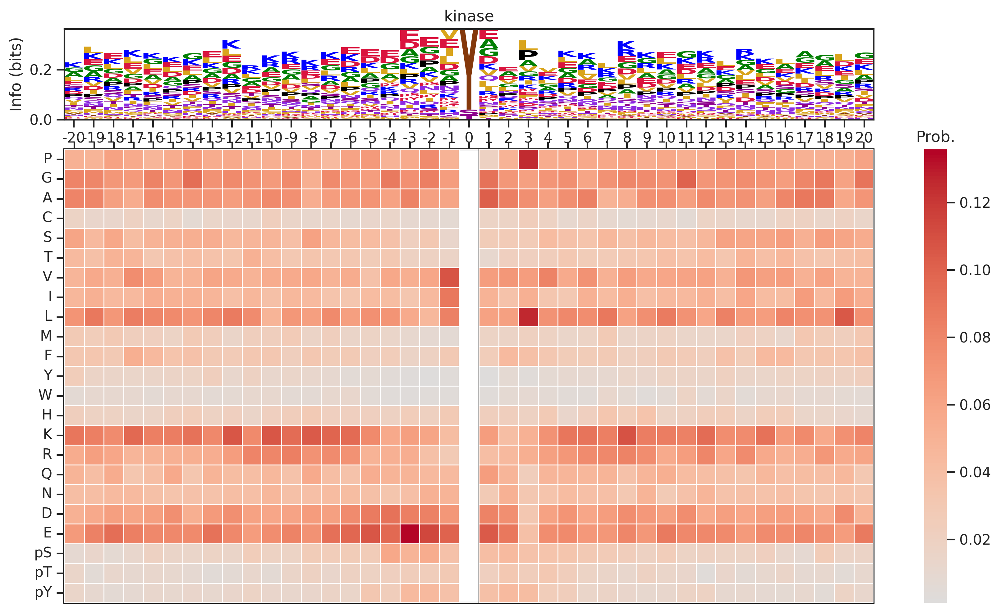
for cluster_id,counts in df_k.cluster.value_counts().items():
df_k_cluster = df_k[df_k.cluster==cluster_id]
pssm = get_prob(df_k_cluster,'site_seq')
if (pssm==0).sum().sum()/(pssm.shape[0]*pssm.shape[1])<0.4: # filter out low quality pssm
# plot_logo_heatmap(pssm,title='kinase',figsize=(14,8))
plot_logo(pssm,title=f'kinase (n={counts})',figsize=(14,1))
plt.show()
plt.close()
# break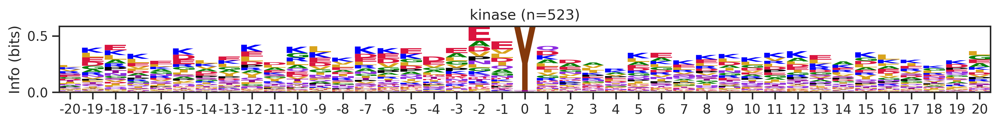
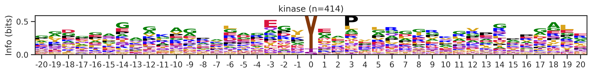
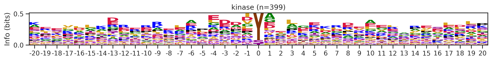
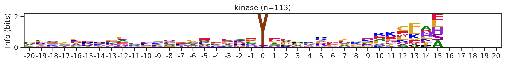
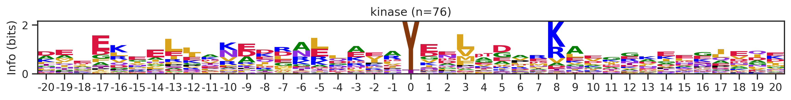
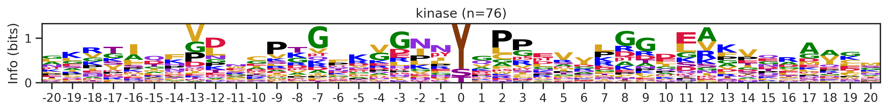